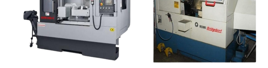
CNC milling & CNC bubut
Untuk kontur dan bentuk kompleks yang harus sama persis di setiap benda kerja.
PT Talenta Teknik Mandiri membuat mold & die, precision part, fabrikasi, dan special purpose machine untuk kebutuhan produksi pabrik Anda.
Pelat, tiang pemandu, bushing, dan punch kami kerjakan dengan mesin CNC, bubut, surface grinding, dan EDM di bengkel kami di Cikupa.
Gulir untuk membongkar die set
Berdiri sejak 2012, kami mengerjakan Special Purpose Machine, Molding/Dies, Fabrikasi, dan Precision Part dengan kualitas dan waktu pengerjaan yang efisien.
Selama 14 tahun, pekerjaan kami ditangani tim yang berpengalaman di bidangnya dan didukung jaringan supplier serta sub-kontraktor yang luas. Dari satu komponen pengganti sampai mesin khusus untuk satu lini produksi, kami kerjakan dari gambar kerja Anda.
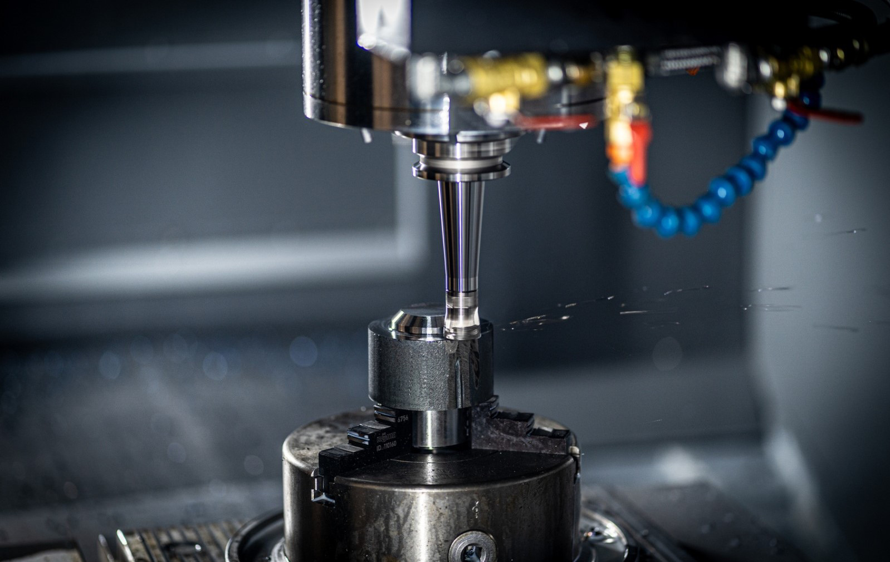
Pilih layanan untuk melihat fotonya di galeri layanan kami.
Mesin khusus yang dirancang mengikuti alur produksi Anda.
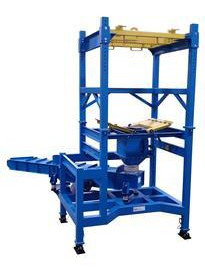
Dies dan cetakan untuk proses stamping maupun molding, dikerjakan sampai siap dipasang.
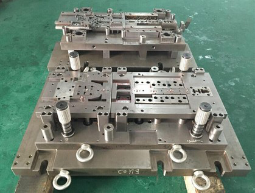
Konstruksi baja dan perlengkapan pabrik, dari bengkel sampai pemasangan di lokasi.
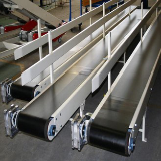
Alat bantu pemegang dan pengecek benda kerja agar hasil produksi konsisten.
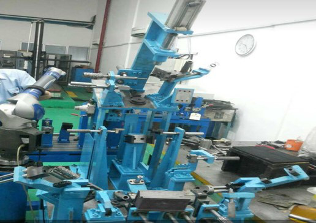
Komponen bubut dan frais sesuai gambar kerja, berbahan baja, aluminium, atau kuningan.
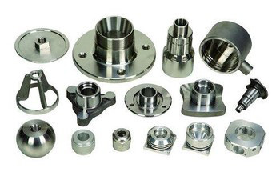
Pemesinan utama dikerjakan sendiri, sehingga ukuran dan jadwal lebih mudah dikendalikan.

Untuk kontur dan bentuk kompleks yang harus sama persis di setiap benda kerja.
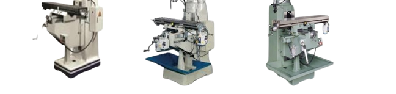
Untuk frais, slot, dan pekerjaan perbaikan komponen.
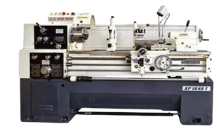
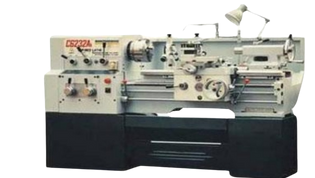
Untuk poros, bushing, dan komponen silindris lainnya.
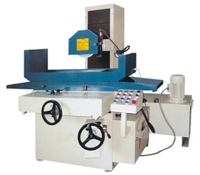
Untuk meratakan permukaan pelat dan blok hingga presisi.
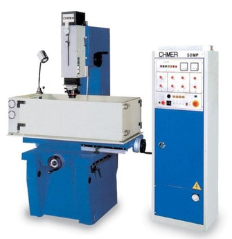
Untuk membentuk rongga dan detail pada baja yang sudah dikeraskan.
Pilih foto untuk memperbesar.
Visi kami
Sukses itu hadiah yang selalu berusaha.
Memberikan solusi rekayasa teknik melalui pembuatan Special Purpose Machine, Molding/Dies, Fabrikasi, dan Precision Part yang inovatif dan efisien.
Menjaga komitmen pada kualitas, ketepatan waktu, dan kepuasan pelanggan sebagai wujud nyata semangat usaha berkelanjutan.
Mengembangkan kemampuan teknis untuk menjawab tantangan industri dan kebutuhan pelanggan yang semakin kompleks.
Perusahaan manufaktur yang pernah bekerja sama dengan kami.
Kirim gambar kerja atau jelaskan kebutuhannya. Tim kami akan menghubungi Anda kembali.